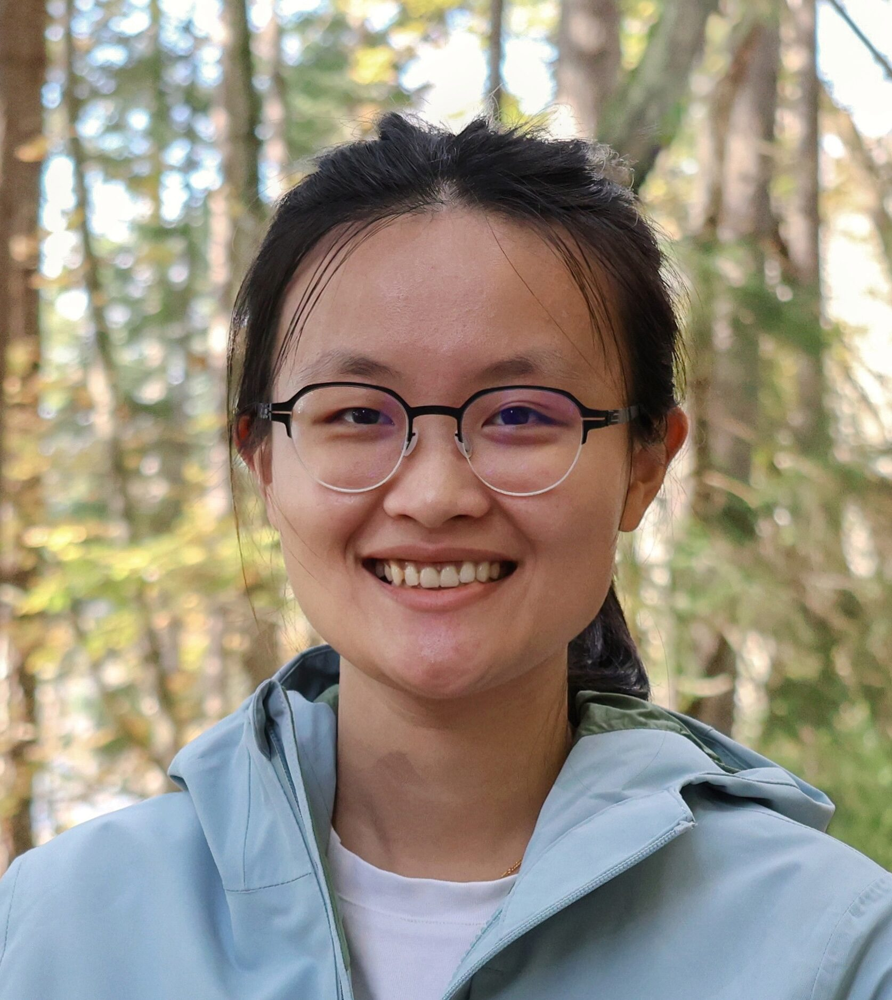

Scientific Sessions
Session 1: The Architecture of Causal Evidence: Translating Targeted Learning into Real-World Data Reality
Schedule: Thursday, October 22, 2026, 9:50 am - 11:30 am
As the volume of Real-World Data (RWD) expands, the pharmaceutical industry faces a critical bottleneck: transforming unstructured data into rigorous, actionable clinical evidence.
This session explores the end-to-end architecture required to achieve this, bridging cutting-edge causal inference methodology with modern data infrastructure and pharmaceutical execution.
Attendees will gain a comprehensive understanding of how advanced statistical frameworks - specifically Targeted Learning and Target Trial Emulation - are moving beyond academic theory to directly impact clinical differentiation and improve the Probability of Success (PoS) in drug development.

Speaker
Dr. Susan Gruber
TL Revolution LLC
Targeted Maximum Likelihood Estimation (TMLE)

Speaker
Dr. Miguel Hernán
Harvard University
Target Trial Emulation

Speaker
Dr. Xiang Zhang
CSL Behring
Real World Application
Session Organizer
Dr. Jane Zhang
Head of Immunology Statistics, AbbVie
Session 2: High-Dimensional Statistical Learning for Biomedical Data
Schedule: Thursday, October 22, 2026, 1:00 pm - 2:40 pm
This session presents new theory and methodology for high-dimensional statistical learning in modern biomedical applications, from cross-population genetic prediction to representation learning from electronic health records.
Dr. Ye Tian studies cross-population polygenic risk score (PRS) prediction, which leverages large datasets to improve prediction in smaller populations. Using a high-dimensional sparse linear regression framework with population-specific and genetically correlated shared signals, the work characterizes how optimal estimation depends on genetic correlation, sample sizes, and signal and noise variances, and shows that Bayesian estimators can achieve near-optimal performance where some global-penalization transfer learning methods do not.
Dr. Mengyan Li introduces SCORE, a semi-supervised representation learning framework for clustering and embedding high-dimensional count data such as EHR and RNA sequencing. Built on a Poisson-adapted latent factor mixture model with a hybrid EM and Gaussian variational algorithm, SCORE uses a small labeled subset to refine estimation on large unlabeled data, with convergence guarantees and error rates. It is demonstrated on predicting disability status in multiple sclerosis from EHR data.

Speaker
Dr. Ye Tian
Pennsylvania State University

Speaker
Dr. Mengyan Li
Bentley University

Session Organizer
Dr. Runze Li
Eberly Family Chair in Statistics, Pennsylvania State University
Session 3: From Genome to Patient: An End-to-End View of Immunology in Drug Development
Schedule: Thursday, October 22, 2026, 2:50 pm - 4:30 pm
This session traces the end-to-end arc of immunology-driven drug development—from population-scale genetics that nominate causal targets, through translational biomarker discovery and patient stratification, to late-phase clinical trials that convert hypotheses into actionable evidence.
The program highlights how statistical genetics, computational biology, and clinical biostatistics intersect to advance therapies for immune-mediated diseases.
The audience will leave with a cohesive, practical view of the genome-to-patient pipeline and concrete insights for cross-functional collaboration.
Speaker
To Be Announced
Session Organizer
Dr. Sara Hamon
Senior Director, Precision Medicine-Quantitative Translational Sciences, Regeneron
Session 4: Real-World Impact of Artificial Intelligence in Medicine
Schedule: Thursday, October 22, 2026, 4:40 pm - 5:40 pm
This showcase bridges the gap between academic research and pharmaceutical industry application by bringing together leading experts to highlight the real-world impact of artificial intelligence.
Moving past theoretical hype, the session features a curated selection of high-impact, concrete case studies demonstrating how AI is actively transforming medicine.
Featured presentations will explore verified success stories across accelerated drug discovery, clinical trial optimization, and translational research.
By focusing on evidence-based examples, this event provides a practical blueprint for cross-disciplinary collaboration and offers a clear view of how data-driven innovation is driving the next generation of biomedical solutions.

Speaker
Dr. Rolando J. Acosta
Manager, Biostatistics, Regeneron
Speaker
Dr. Erick Scott
VP, Clinical Data Science, Keiji AI

Speaker
Dr. Yi-Lin Chiu
Director and Department Head, Discovery and Exploratory Statistics (DIVES), Biometrics, AbbVie
Session Organizer
Dr. Haoda Fu
Head of Exploratory Biostatistics, Amgen
Session 5: Digital Health Technologies and Wearable Sensors in Clinical Research
Schedule: Friday, October 23, 2026, 9:00 am - 10:30 am
Emerging digital technologies—such as wearable sensors and at-home self-assessments—capture physiological, functional, and behavioral data remotely in patients' everyday environments. By enabling frequent, unbiased measurement across the full functional spectrum, these tools reveal clinical insights that traditional point-in-time visits often miss.
Realizing their potential requires new strategies for study design, quantitative methods, and data and computing infrastructure so that digital biomarkers and outcome measures meet high standards of clinical research and development.
In this session, three digital health industry veterans will share practical guidance for statistically rigorous methods supporting strategy, experimental design, instrument operationalization, and synthesis of results. They will illustrate approaches to monitoring disease progression and to developing and validating measures, with examples from narcolepsy and Parkinson's disease.
Opening remarks will be delivered by Dr. Jaroslaw Harezlak—an academic pioneer in wearable devices and Chair of the Department of Epidemiology and Biostatistics at Indiana University School of Public Health-Bloomington. He will also moderate the panel discussion and Q&A session.

Speaker
Dr. Junrui Di
Director, Data Science & Digital Health, Neuroscience, Johnson & Johnson

Speaker
Dr. Jacek K. Urbanek
Director, Biostatistics, Regeneron

Speaker
Dr. Marta Karas
Senior Manager, Statistics, Takeda
Moderator
Dr. Jaroslaw Harezlak
Chair, Department of Epidemiology and Biostatistics, Indiana University School of Public Health-Bloomington
Session 6: Bridging AI and Statistical Inference: Methods and Applications
Schedule: Friday, October 23, 2026, 10:45 am - 12:15 pm
This session will highlight emerging methods at the intersection of rigorous statistical inference and modern machine learning for analyzing high-dimensional genomic data.

Speaker
Dr. Jacob Bien
Professor of Data Sciences and Operations, USC Marshall School of Business
Speaker
Dr. Rong Ma
Assistant Professor of Biostatistics, Harvard T.H. Chan School of Public Health

Speaker
Dr. Ying Jin
Assistant Professor, Statistics and Data Science, The Wharton School, University of Pennsylvania
Speaker
Dr. Haiyan Huang
Professor of Statistics, University of California, Berkeley
Session Organizer
Dr. Nancy Zhang
Ge Li and Ning Zhao Professor of Statistics, The Wharton School, University of Pennsylvania
Session 7: Explainable Artificial Intelligence (XAI) for Interpretable Models
Schedule: Friday, October 23, 2026, 1:15 pm - 2:45 pm
This session covers Explainable Artificial Intelligence (XAI), which refers to a set of methods and techniques in artificial intelligence (AI) that aim to make the decision-making processes of AI systems understandable to human users.
The primary goal of XAI is to provide transparency, accountability, and interpretability in AI models, particularly those that are complex and often considered "black boxes," such as deep learning models.
This session will be followed by a panel.

Speaker
Dr. Fahimeh Mamashli
Associate Director, Data Science, Data and Statistical Science AI/ML, Daiichi Sankyo

Speaker
Dr. Alex Sverdlov
Senior Director, Statistical Scientist, Novartis

Speaker
Dr. Gurpreet Nanda
Senior Director, Head of Applied Machine Learning, Bayer
Session Organizer
Mercedeh Ghadessi
Director, Principal Statistician, Bayer
Session 8: Recent Advancement on Bayesian Methodology in Clinical Trials for Drugs and Biologics
Schedule: Friday, October 23, 2026, 3:00 pm - 4:30 pm
Session Organizers: Dr. Ming-Hui Chen and Dr. Chenguang Wang.
This is going to be a Bayesian session.
This session mainly focuses on recent advancement or reactions in responding to a recent FDA landmark draft guidance, "Use of Bayesian Methodology in Clinical Trials of Drug and Biological Products," jointly released by the Center for Drug Evaluation and Research (CDER) and the Center for Biologics Evaluation and Research (CBER).

Speaker
Yuhua Zhang
University of Florida
Flexible Evaluation of Trial-Level Surrogates Using a Combination of Randomized and Observational Subgroups

Speaker
Dr. Chenguang Wang
Regeneron
Bridging Bayesian Trial Design from FDA Guidance to Practice

Speaker
Dr. Ming-Hui Chen
Board of Trustees Distinguished Professor of Statistics, University of Connecticut
Statistical Methods for Borrowing Information in Pediatric Clinical Trials: A Comparative Review
Discussant
Dr. Lei Nie
Division of Biometrics IV, Office of Biostatistics, OTS, CDER, FDA

Session Chair
Dr. Wanxue Zou
Regeneron